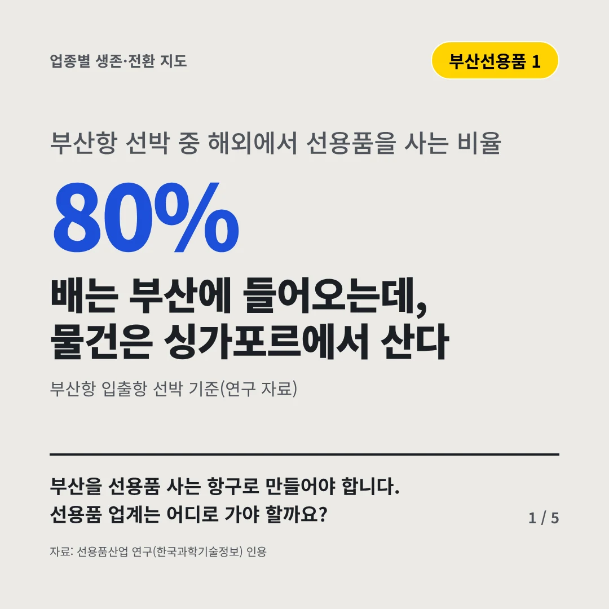
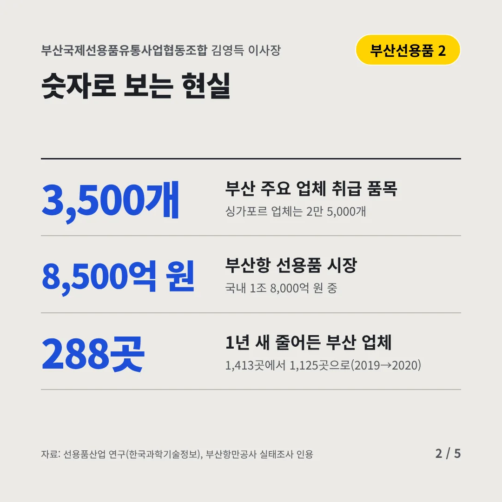
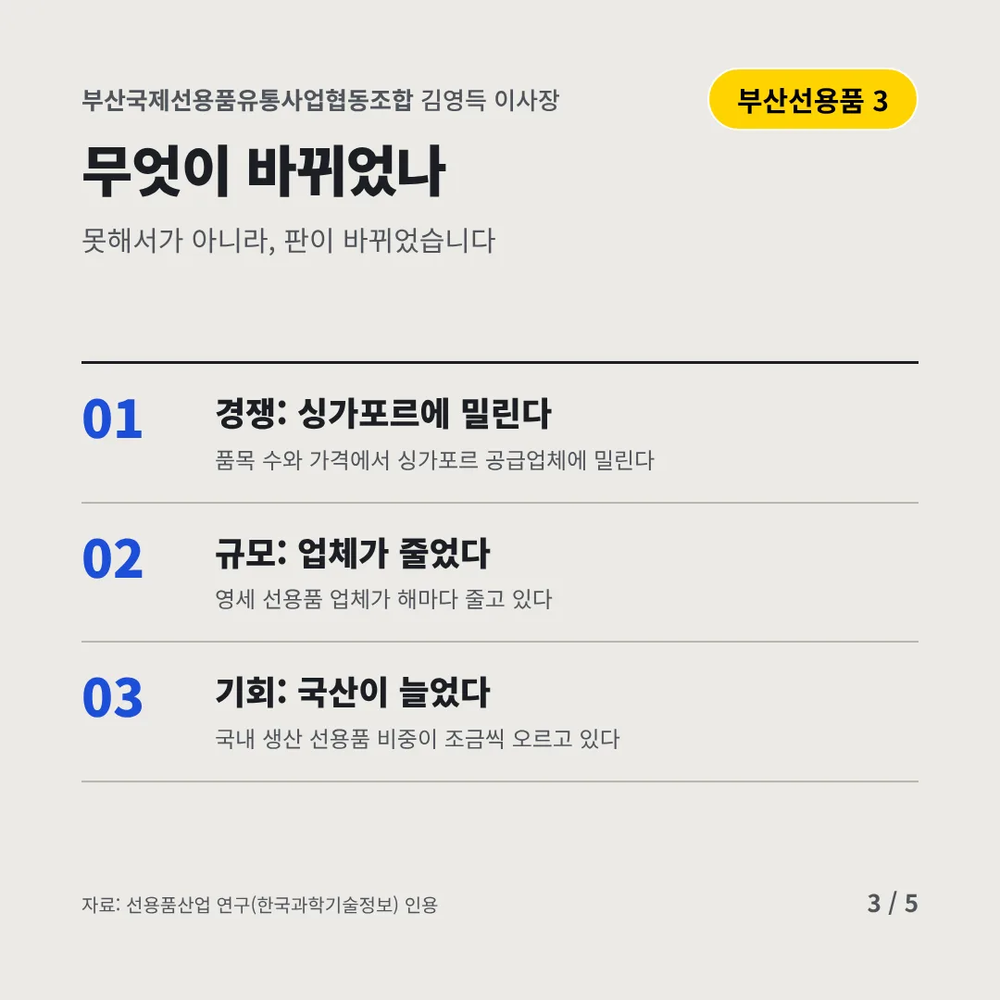
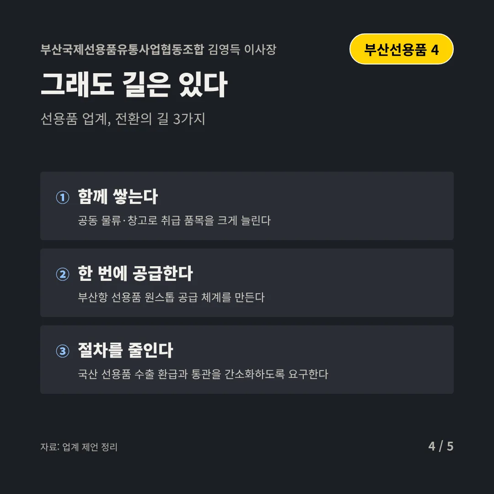
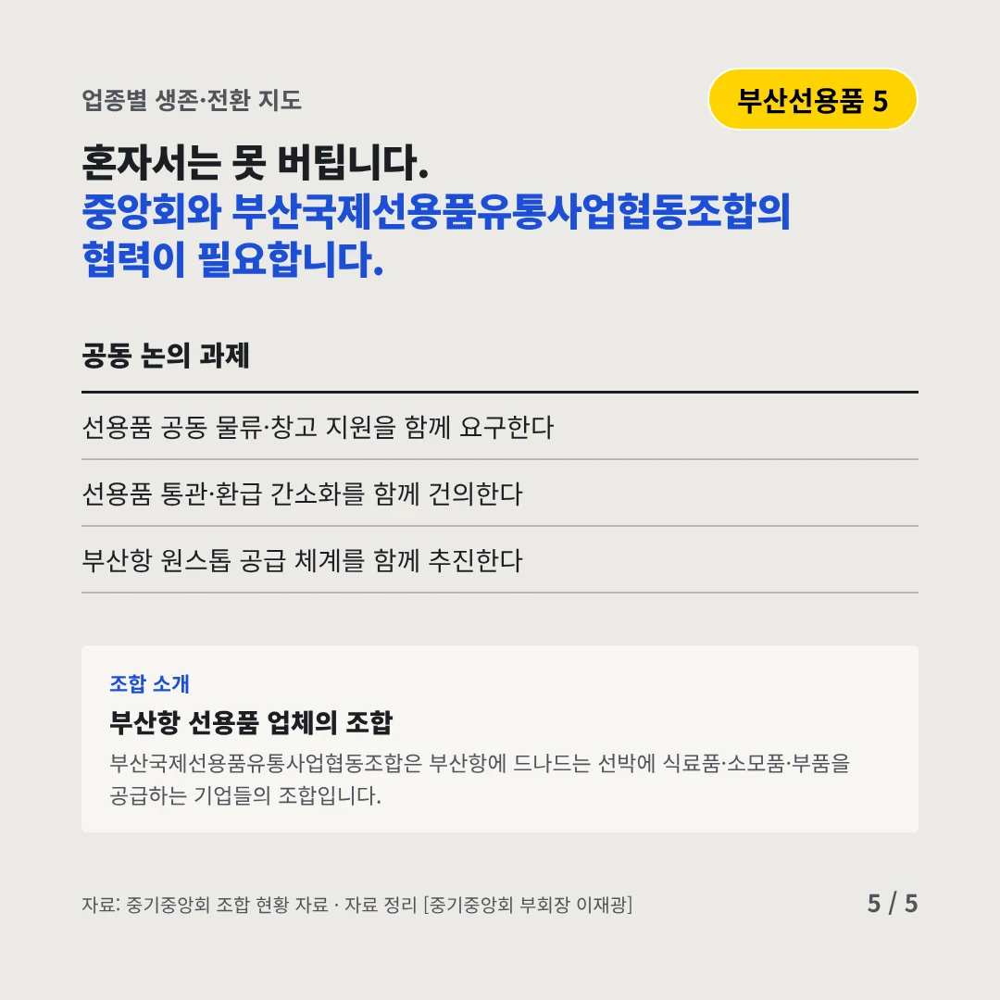
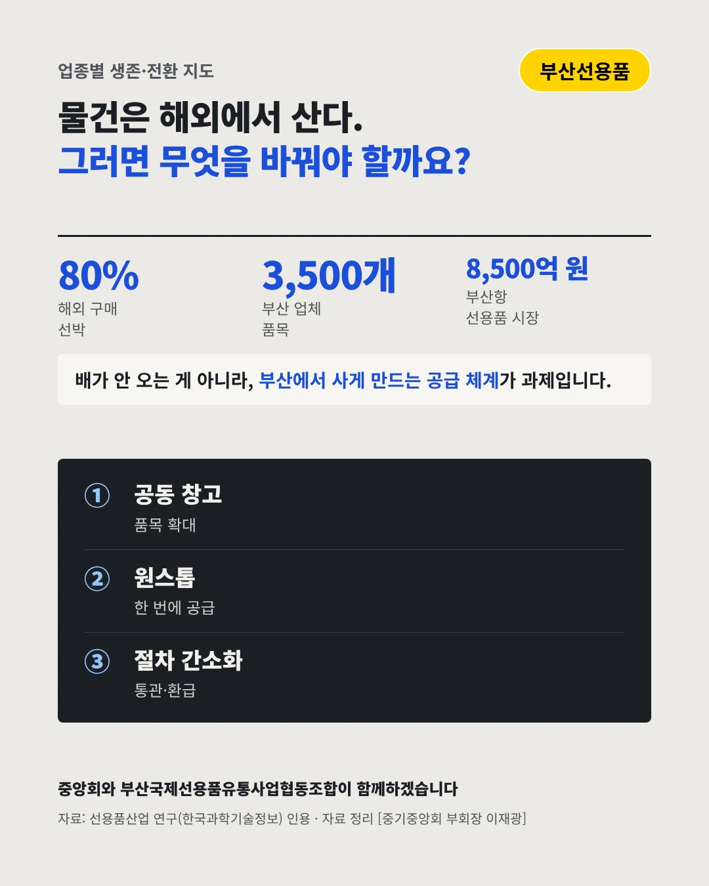

부산국제선용품유통사업협동조합
배는 부산에 들어오는데, 물건은 싱가포르에서 산다
80% 부산항 선박 중 해외에서 선용품을 사는 비율






부산을 선용품 사는 항구로 만들어야 합니다. 선용품 업계는 어디로 가야 할까요?
숫자로 보는 현실
- 3,500개부산 주요 업체 취급 품목싱가포르 업체는 2만 5,000개
- 8,500억 원부산항 선용품 시장국내 1조 8,000억 원 중
- 288곳1년 새 줄어든 부산 업체1,413곳에서 1,125곳으로(2019→2020)
무엇이 바뀌었나
- 경쟁: 싱가포르에 밀린다품목 수와 가격에서 싱가포르 공급업체에 밀린다
- 규모: 업체가 줄었다영세 선용품 업체가 해마다 줄고 있다
- 기회: 국산이 늘었다국내 생산 선용품 비중이 조금씩 오르고 있다
그래도 길은 있다
- 함께 쌓는다공동 물류·창고로 취급 품목을 크게 늘린다
- 한 번에 공급한다부산항 선용품 원스톱 공급 체계를 만든다
- 절차를 줄인다국산 선용품 수출 환급과 통관을 간소화하도록 요구한다
한 장 요약

조합 소개
부산국제선용품유통사업협동조합은 부산항에 드나드는 선박에 식료품·소모품·부품을 공급하는 기업들의 조합입니다.
자료: 선용품산업 연구(한국과학기술정보), 부산항만공사 실태조사